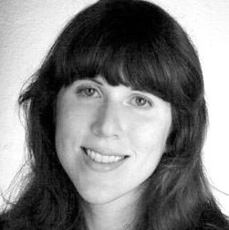

Jennifer Freeouf
Go to About Me

RESUME
Relevant Experience
CLARINS USA Senior Designer, January 2014-present
- Hired as senior member of new creative team tasked with refreshing and elevating the French-heritage prestige cosmetics/skincare brand.
- Focus on marketing collateral (print and digital for launches and promotions), merchandising (including displays and at-counter elements as well as open sell visuals and event animations), packaging, in-store visuals, visual weeks and events, collaborating on new counter installations, advertising and PR.
- Manage projects, work closely with Paris team, in-house departments, retailers, production and vendors.
MISE EN SCÈNE Art Director/Designer, 2007-2014
- Handled projects from client interaction to concept design to development to production; client focus on beauty, luxury, fashion and lifestyle brands.
- Conceptualized and created logos, identity elements, brand art, print collateral (catalogs, brochures, invitations, lookbooks), advertising, packaging, display, signage, branded environments, websites, e-marketing/digital essentials.
- Clients included: Caudalie, Amnesty International, NY Horticultural Society, The Morgan Library & Museum.
FREELANCE 2011-2012
- On-site freelance member of design teams.
- Clients included: Tom Ford Beauty, Sam Edelman Shoe.
Education
Parsons School of Design, BFA Photography, Minor Graphic Design